Pour une usine qui n'a pas d'ERP mais qui veut savoir d'où viennent ses déchets : quel ordre de fabrication, quelle matière, combien de déchets par pièce.
⏱ 30 minutes🧵 Exemple : jeans🤖 L'assistant virtuel vous guide
Avant de commencer, ayez sous la main
Tout ce que demande le Guide 1 (société, site, déchets, prestataire)
Vos matières premières (référence, unité : m, kg ou pièce)
Vos articles et ce qu'une pièce consomme
Un ordre de fabrication (OF) en cours
Ce que l'OF a consommé et produit
Les ateliers par lesquels passe l'OF (coupe, confection…)
Le chemin en un coup d'œil
La création du compte et les quatre premières étapes sont les mêmes que dans le Guide 1 : elles sont résumées ici. Ce guide détaille ensuite ce qui est propre au suivi de production. Exemple : l'usine Jeans Sahel fabrique 500 jeans (OF-2026-001).
ACréer le compteComme le Guide 1 : société et secteur, vous, formule, email, validation.
1Votre façon de travaillerUne seule différence : « Suivez-vous la production ? » → Oui.
2–4Site, déchets, prestataireComme le Guide 1, avec un atelier par étape de fabrication.
P1Vos matières premièresLe tissu, le fil… ce qui entre dans l'usine.
P2Vos articlesCe que vous fabriquez, et ce qu'une pièce consomme.
P3Un ordre de fabricationQuel article, combien, par quels ateliers.
P4Les déchets de l'OFChaque lot de déchets rattaché à son OF.
P5Consommé et produitPour calculer le taux de chute et les déchets par pièce.
P6Lire les résultatsSur l'OF, la page Analyse et l'Accueil.
CChute estimée et coupeDéchets produits, efficience, tailles, matelas, estimé contre pesé.
✓Fiche de testCochez ce qui marche, notez ce qui gêne.
Comment lire ce guide. L'élément à cliquer est entouré en rouge ; l'encadré vert dit ce que vous devez voir. Les mots de l'écran sont en gras.
Le vocabulaire.Matière première : ce que vous achetez (Denim). Article : ce que vous fabriquez (Jean 5 poches). OF (ordre de fabrication) : « fabriquer 500 jeans », avec ses étapes (coupe, confection). Lot de déchets : un sac, une balle… de déchets, suivi jusqu'à son départ.
DivaWaste · Guide 2 — Sans ERP, avec production
A. Créer le compte Détail pas à pas : Guide 1, partie A
Créer un compte › Industriel. Société, matricule fiscal, Secteur d'activité (ici Textile et habillement). Suivant.
Vous : nom, email, mot de passe (12 caractères, une lettre et un chiffre). Suivant.
Formule (30 jours gratuits), cochez J'ai lu et j'accepte, Créer mon compte. Confirmez l'email, puis attendez la validation par Diva Software.
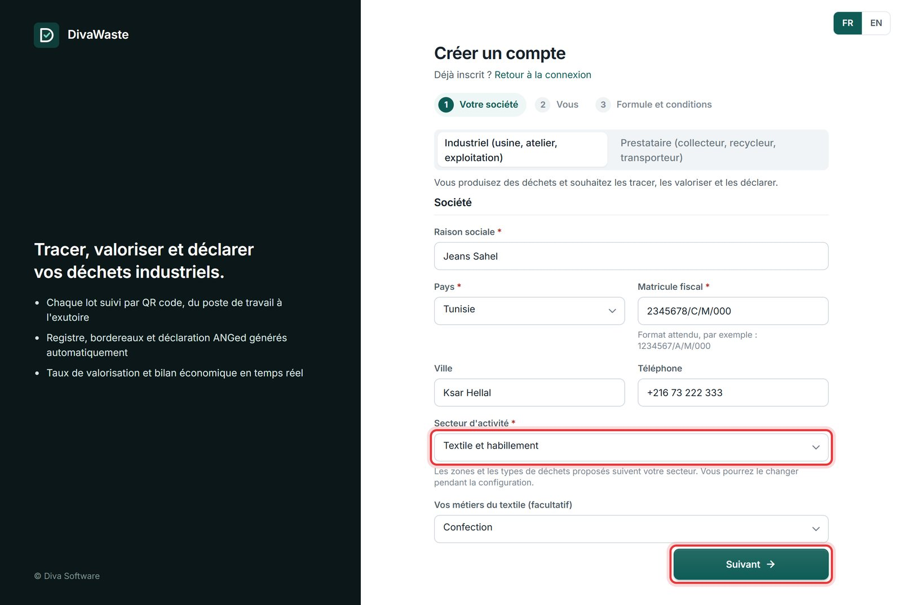
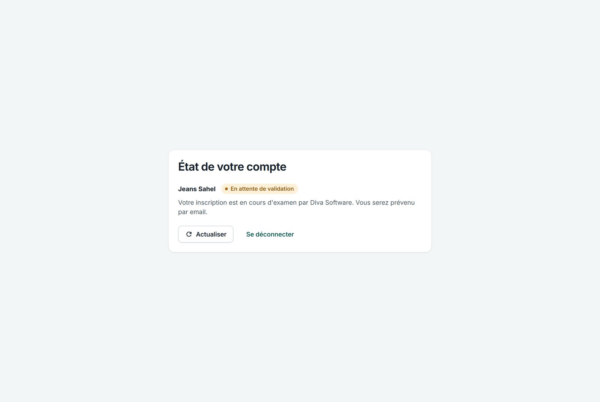
À gauche : la société et son secteur. À droite : « En attente de validation ».
1Votre façon de travailler
Carte de l'assistant › Aller à : Accueil › Mise en route. Le secteur est déjà choisi. Répondez :
Question
Réponse
Ce que cela change
Avez-vous un ERP ?
Non
Vous saisissez vos OF dans DivaWaste (ou les importez d'un tableau Excel).
Suivez-vous la production (OF, matières premières) ?
Oui
Le menu Production apparaît : Fabrication, Référentiel, Analyse.
Déchets dangereux ? Douane ? Bourse ?
Selon vous
Comme dans le Guide 1.
DivaWaste · Guide 2 — Sans ERP, avec production
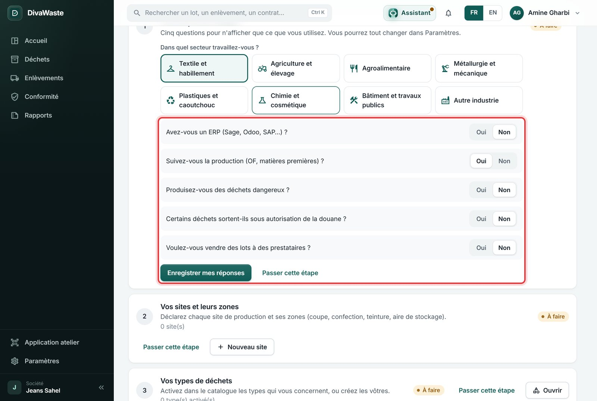
Cliquez sur Enregistrer mes réponses.
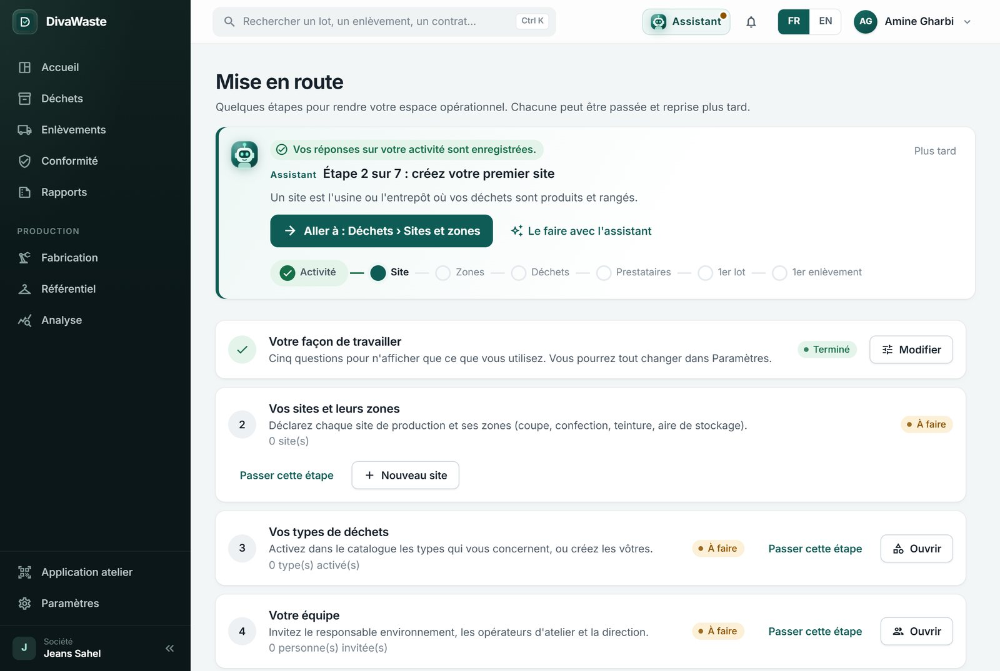
✔ Vous devez voir à gauche, sous « PRODUCTION » : Fabrication, Référentiel et Analyse. Avant vos réponses, ce menu n'apparaît pas. L'assistant passe à l'étape 2 sur 7.
DivaWaste · Guide 2 — Sans ERP, avec production
2–4. Site, déchets, prestataire Détail pas à pas : Guide 1, étapes 2 à 4
2Le site, avec un atelier par étape
Déchets › Sites et zones › Nouveau site. Cochez une zone pour chaque étape de fabrication où naissent des déchets : ici Coupe et Confection, plus l'aire de stockage (toujours créée).
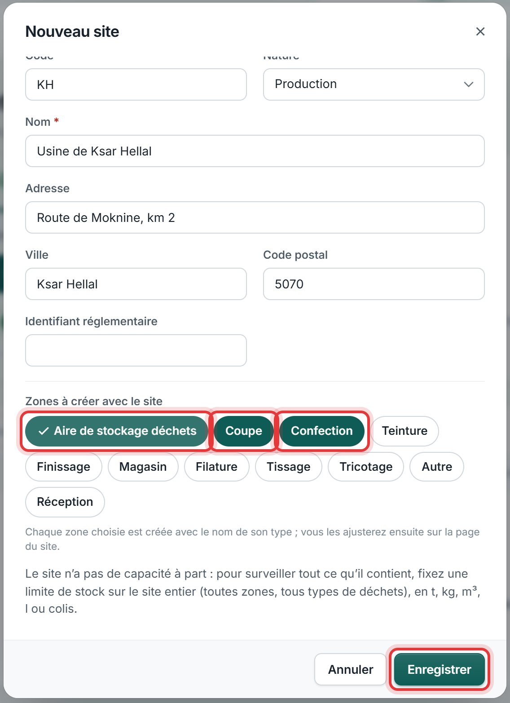
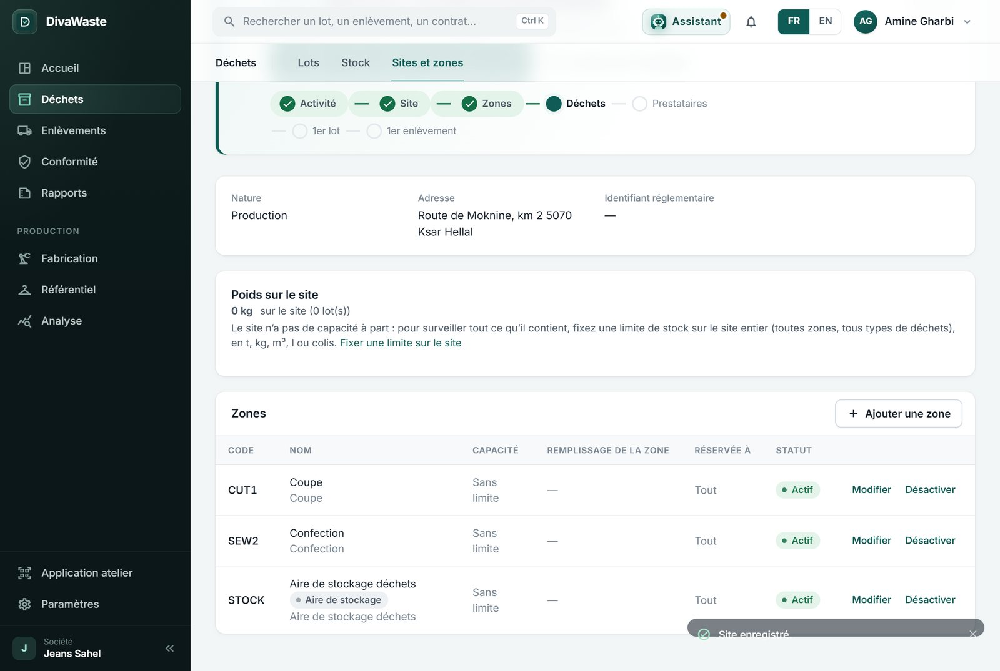
Pourquoi c'est important ici. Un lot de déchets créé dans la zone Coupe est compté à l'étape « Coupe » de l'OF. La zone sert à savoir à quelle étape le déchet est né.
DivaWaste · Guide 2 — Sans ERP, avec production
3–4Vos types de déchets et votre prestataire
Paramètres › Types de déchets › Catalogue de référence › Activer (ici : Chutes de coupe, Rebuts de confection, Cartons). Puis Enlèvements › Prestataires › Ajouter à mes partenaires.
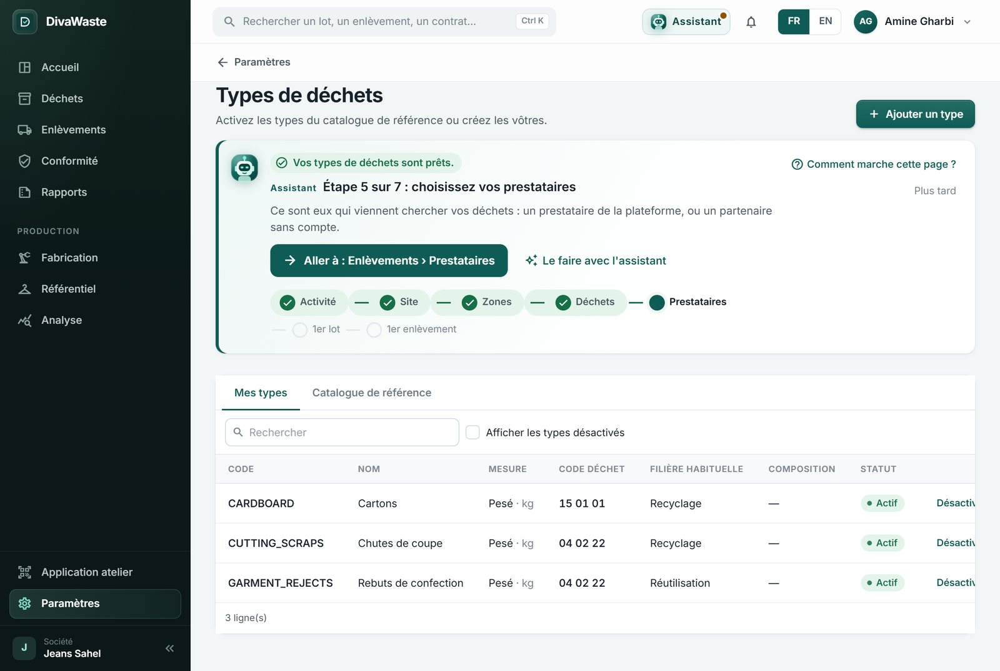
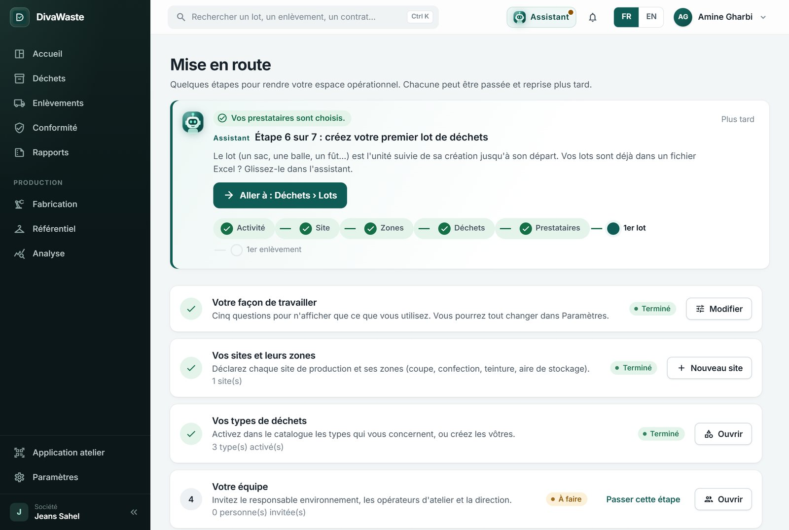
✔ Vous devez voir sur Accueil › Mise en route les étapes 1, 2, 3 et 5 « Terminé ». L'équipe (4) peut attendre.
DivaWaste · Guide 2 — Sans ERP, avec production
Plus bas, Comment vos données arrivent-elles ? Sans ERP, deux chemins :
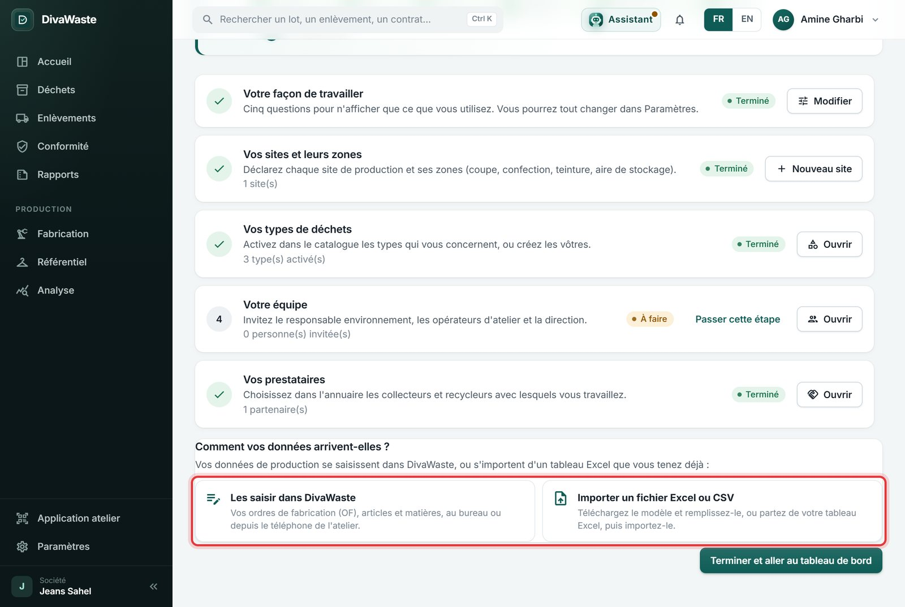
Les saisir dans DivaWaste : c'est ce que montre la suite de ce guide.
Importer un fichier Excel ou CSV : si vous tenez déjà vos OF dans un tableau (voir « Plus », en fin de guide).
DivaWaste · Guide 2 — Sans ERP, avec production
P. Votre production
P1Une matière première
Menu Référentiel › Matières premières et articles, onglet Matières premières, bouton Nouvelle matière première.
Tissu au mètre : remplissez Grammage (400 g/m²) et Laize (150 cm). Sans eux, DivaWaste ne peut pas convertir les mètres consommés en kg, ni calculer le taux de chute.
Enregistrer.
DivaWaste · Guide 2 — Sans ERP, avec production
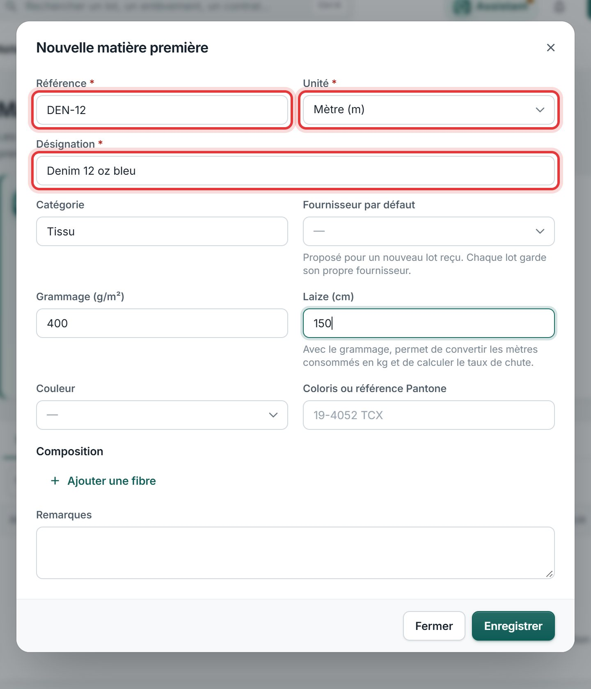
✔ Vous devez voir la fiche DEN-12 — Denim 12 oz bleu, « Actif », avec ses onglets Aperçu, Lots reçus, Consommations, Prix d'achat.
Bon à savoir. La composition et la couleur d'une matière première sont reprises sur les déchets qui en proviennent : utile pour vendre ou recycler les chutes.
DivaWaste · Guide 2 — Sans ERP, avec production
P2Un article
Même page, onglet Articles, bouton Nouvel article.
Consommation par pièce › Ajouter une matière première : DEN-12, 1,4 (m par jean). Elle sert à comparer le prévu et le réel d'un OF.
Enregistrer.
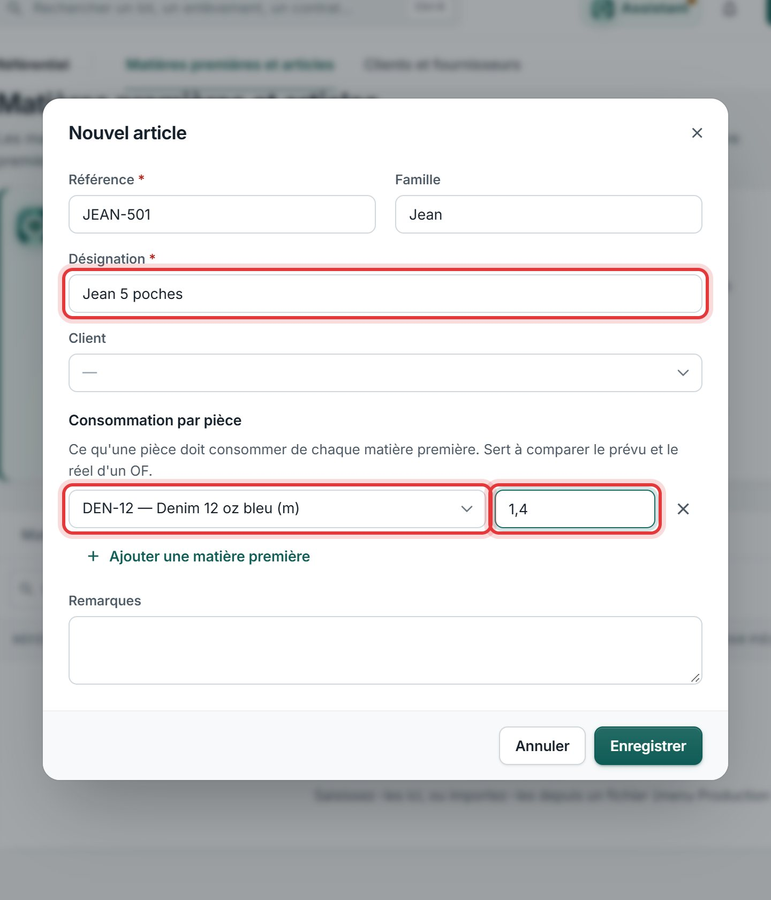
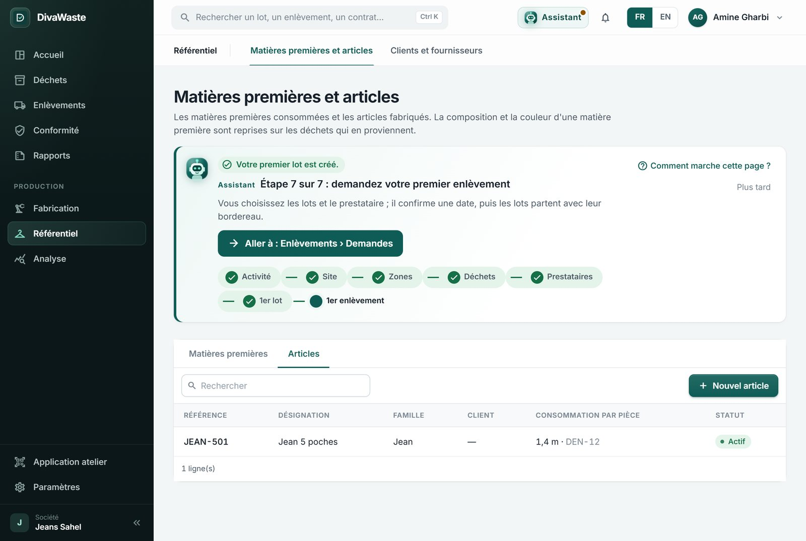
✔ Vous devez voir la ligne JEAN-501 · Jean 5 poches · 1,4 m · DEN-12, « Actif ».
DivaWaste · Guide 2 — Sans ERP, avec production
P3Un ordre de fabrication (OF)
Menu Fabrication › Ordres de fabrication, bouton Nouvel OF.
N° d'OF (OF-2026-001), Statut (« En cours » ; ou « Prévu »), Article (JEAN-501), Quantité prévue (500).
Commande : « Sans commande » suffit. Une commande client sert à calculer le gain (voir « Plus »).
Étapes › Ajouter une étape : Coupe à l'Usine de Ksar Hellal, puis Confection. Chaque étape a son site : un OF peut être coupé dans une usine et cousu dans une autre.
Enregistrer.
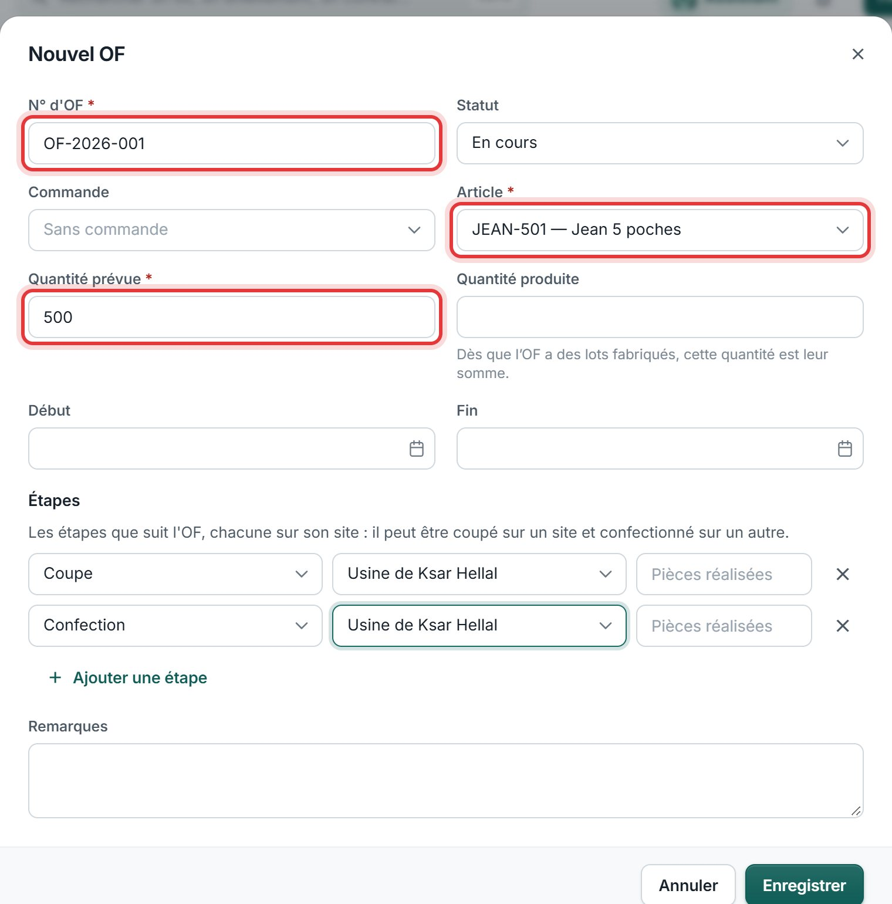
✔ Vous devez voir la page Ordre de fabrication OF-2026-001 « En cours » : le chemin Client › Commande › OF › Article, et les cases Produit / prévu, Déchets, Coût, Gain.
DivaWaste · Guide 2 — Sans ERP, avec production
P4Les déchets de l'OF
Sur la page de l'OF, onglet Lots de déchets : Enregistrer un déchet.
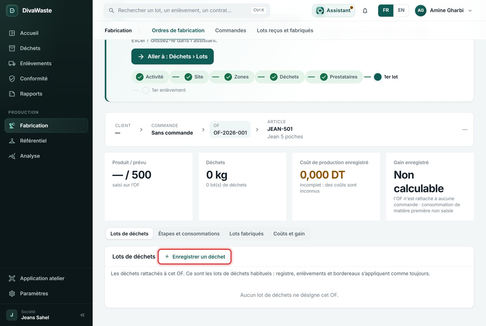
Site et zone : la zone de l'atelier où le déchet est né (ici Usine de Ksar Hellal · Coupe).
Type de déchet (Chutes de coupe) et Poids net (35 kg). Pas encore pesé ? Laissez vide : le lot restera « À peser ».
Créer.
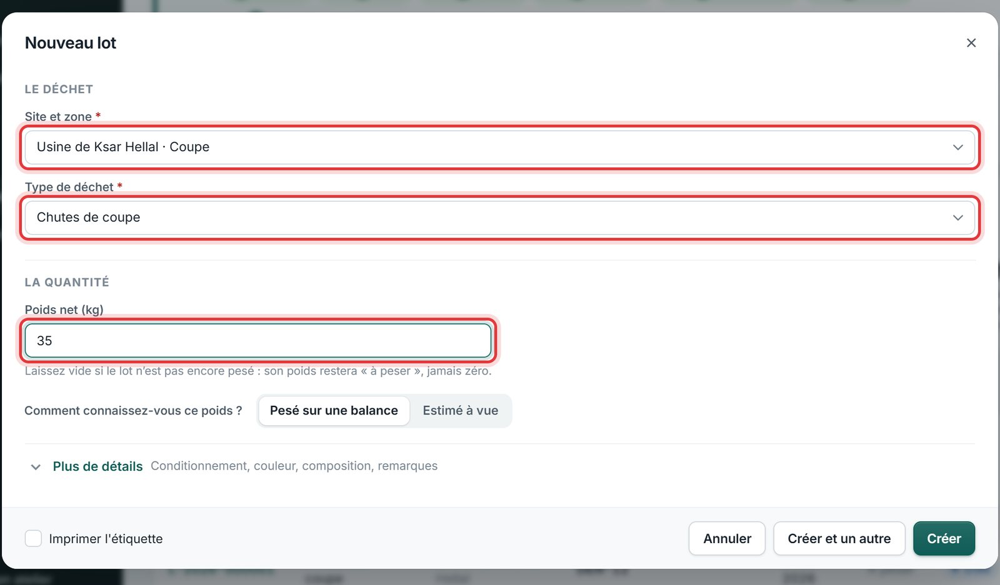
DivaWaste · Guide 2 — Sans ERP, avec production
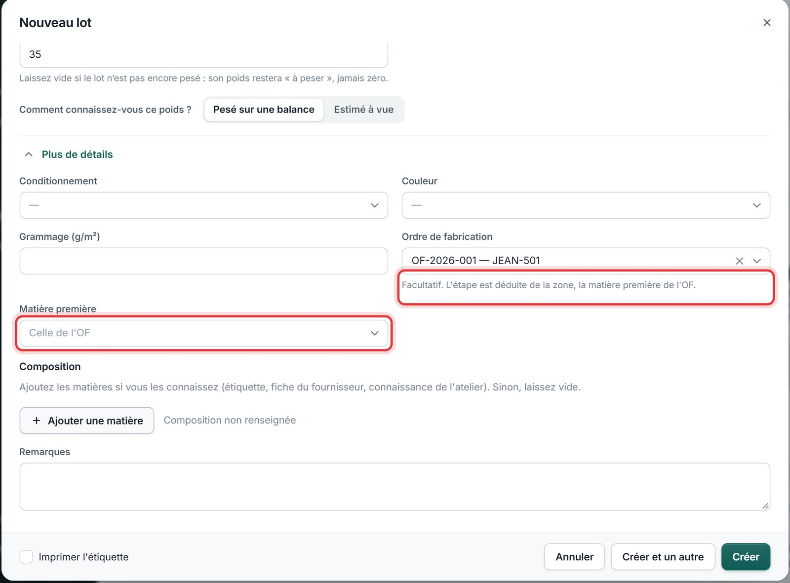
« Plus de détails » : l'OF est déjà rempli, la matière première est « Celle de l'OF » ; l'étape est déduite de la zone.
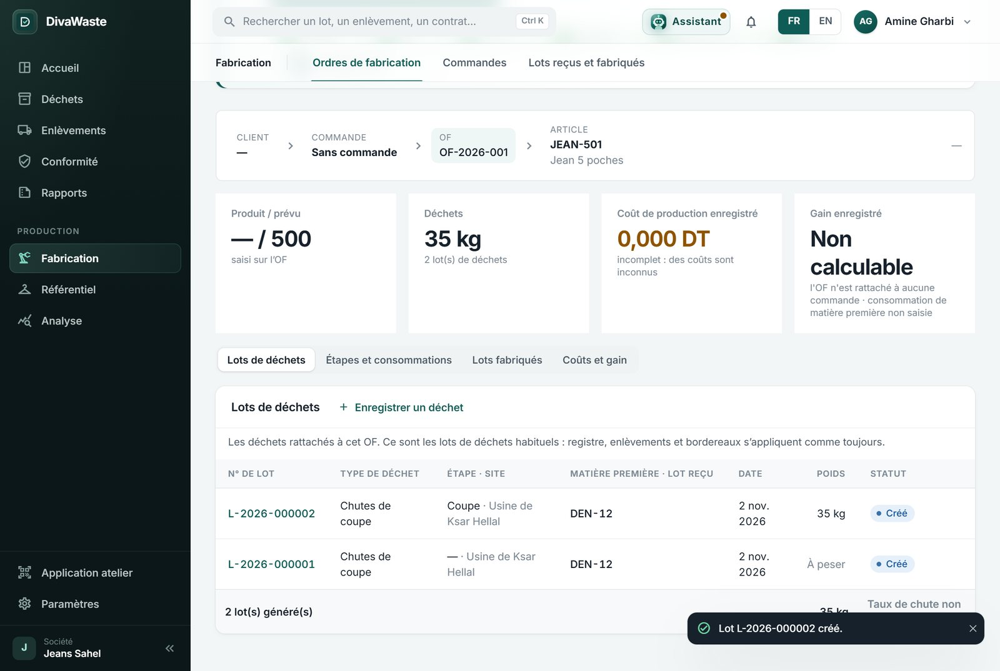
✔ Vous devez voir dans Lots de déchets la ligne L-2026-000002 · Chutes de coupe · Coupe · Usine de Ksar Hellal · DEN-12 · 35 kg. Un lot créé sans poids s'affiche « À peser » (ici L-2026-000001) : pesez-le plus tard depuis sa fiche (Plus d'actions › Repeser).
DivaWaste · Guide 2 — Sans ERP, avec production
P5Ce que l'OF a consommé et produit
Page de l'OF, onglet Étapes et consommations › Modifier les consommations › Ajouter une consommation.
Matière première (DEN-12), Quantité (720 m), Étape (Coupe), Site. Lot reçu : si vous savez de quelle livraison vient le tissu ; sinon, « Lot non précisé ». Enregistrer.
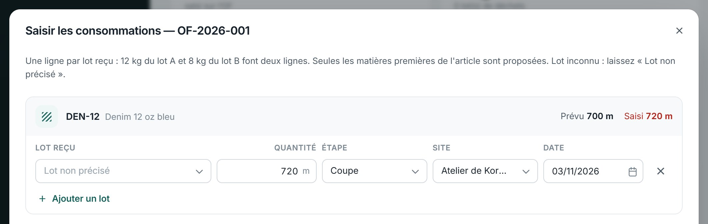
En haut de l'OF, Modifier › Quantité produite : 480. Enregistrer.
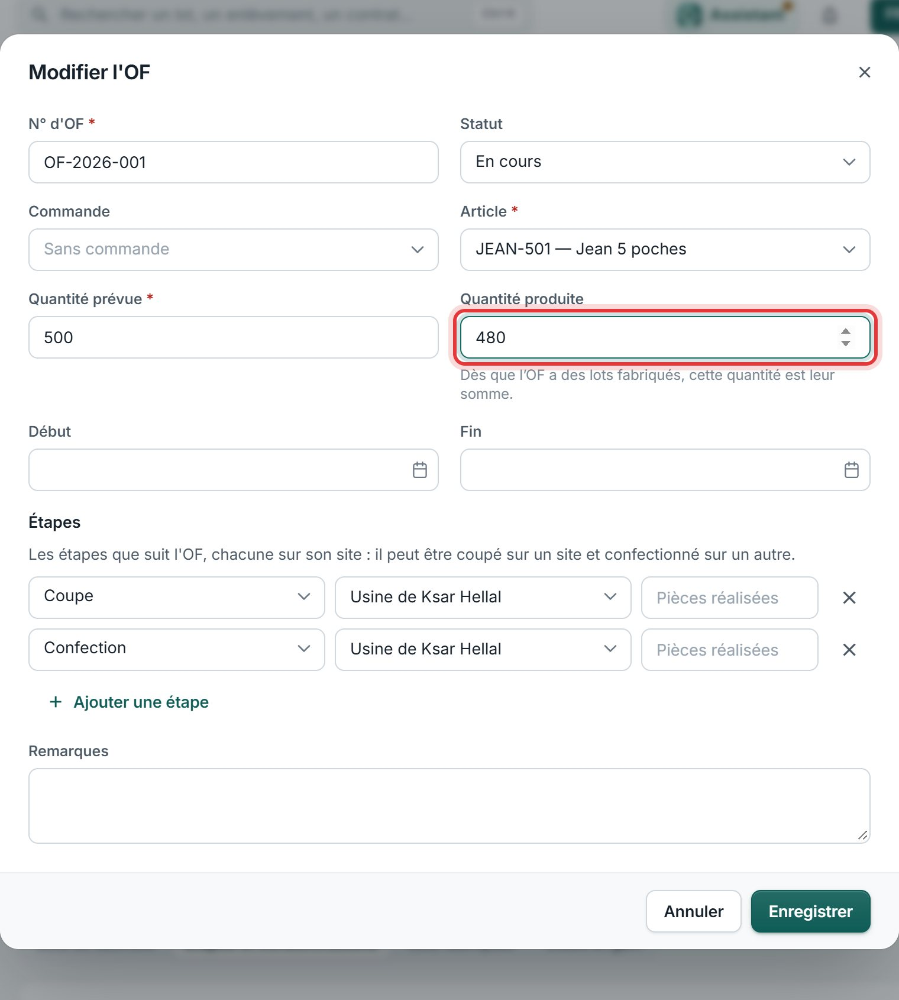
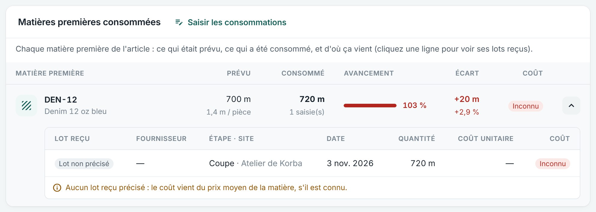
✔ Vous devez voir pour DEN-12 : Prévu 700 m (500 jeans × 1,4 m), Consommé 720 m, Écart +20 m (+2,9 %).
DivaWaste · Guide 2 — Sans ERP, avec production
P6Lire les résultats
Sur l'OF : les cases du haut.
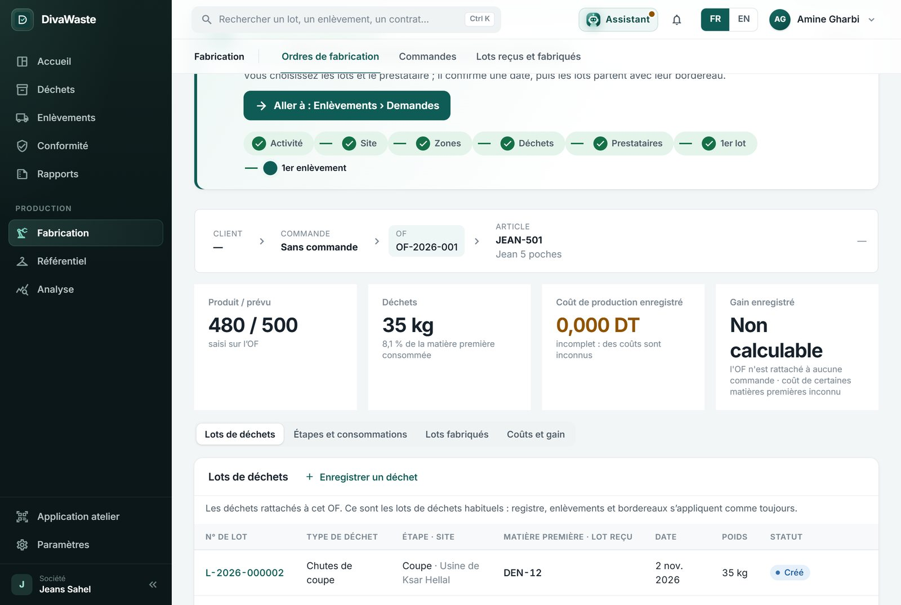
Case
Ici
Ce que cela veut dire
Produit / prévu
480 / 500
Pièces produites sur pièces prévues.
Déchets
35 kg
Tous les lots rattachés à l'OF. « 8,1 % de la matière première consommée » : 35 kg de chutes pour 720 m de denim (≈ 432 kg avec le grammage et la laize).
Coût de production
0,000 DT
« Incomplet » tant que le prix d'achat du tissu n'est pas saisi (fiche de la matière › Prix d'achat).
Gain
Non calculable
Il faut une commande client avec son prix de vente (voir « Plus »).
DivaWaste · Guide 2 — Sans ERP, avec production
Menu Analyse › Statistiques : tous vos OF de la période.
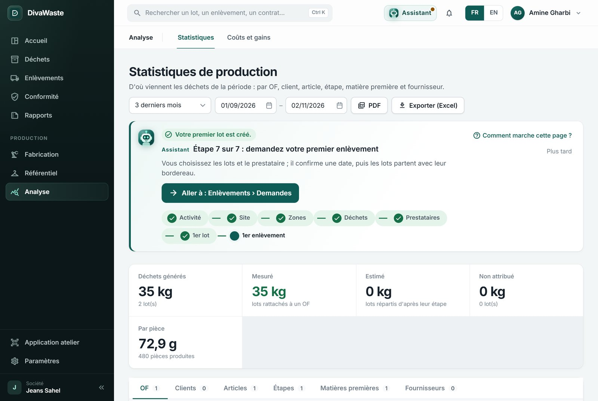
Valeur
Ce que cela veut dire
Mesuré
Déchets de lots qui désignent leur OF (comme L-2026-000002).
Estimé
Lots qui n'indiquent que leur étape (zone) : leur poids est réparti entre les OF présents à cette étape, ce jour-là, selon les pièces réalisées.
Non attribué
Lots sans OF ni étape reconnue.
Par pièce
Déchets ÷ pièces produites : 35 kg ÷ 480 = 72,9 g par jean.
Taux de chute
Part de la matière consommée devenue déchet (8,1 %).
Sur l'Accueil, « Déchets par pièce produite » reste vide (« Nombre de pièces non saisi ») tant que vous n'avez pas saisi vos Pièces produites par site et par mois, en bas de la page Statistiques. Cet indicateur de l'Accueil ne lit pas les quantités des OF.
DivaWaste · Guide 2 — Sans ERP, avec production
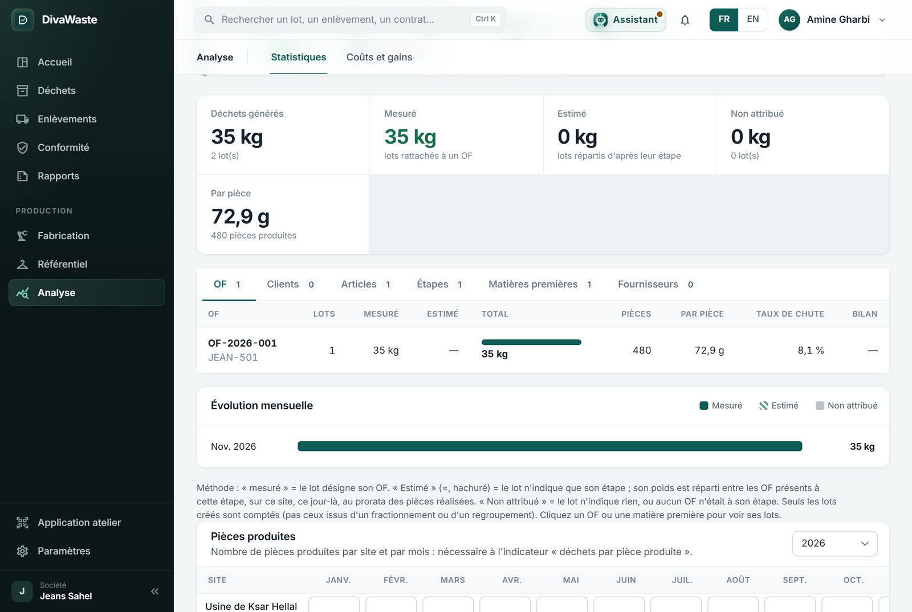
Analyse › Statistiques, en bas : « Pièces produites », une case par site et par mois.
Sur l'Accueil, le bloc Origine des déchets en production reprend vos OF qui ont produit le plus de déchets (total, par pièce, taux de chute).
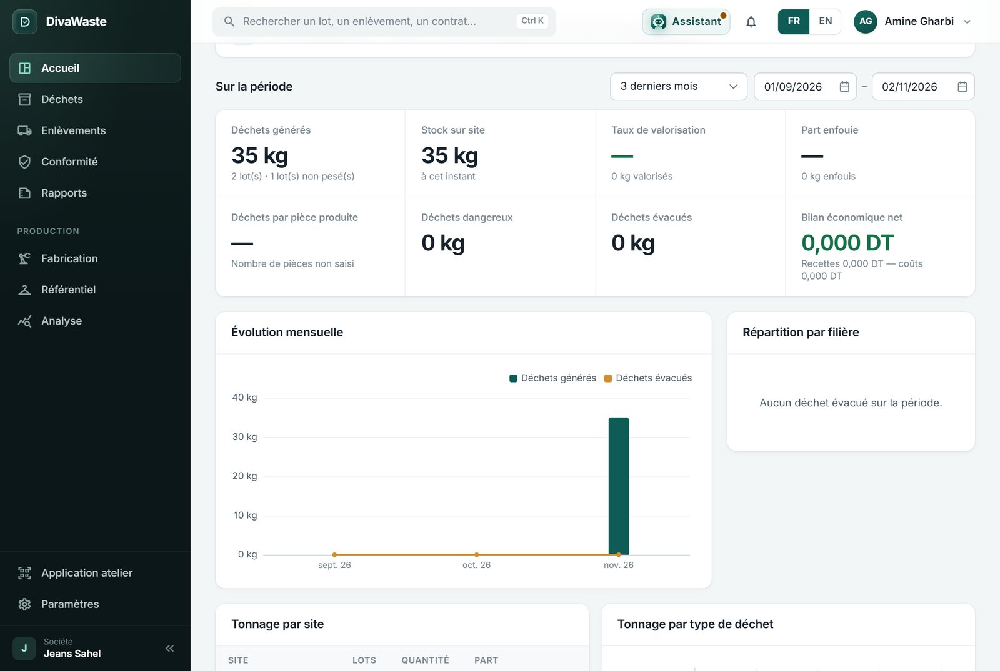
La suite. Les lots de l'OF se demandent en enlèvement comme tous les autres : voir le Guide 1 et la fiche « Le cycle de vie d'un lot ».
DivaWaste · Guide 2 — Sans ERP, avec production
C. Chute estimée et coupeCe que la coupe devrait laisser, puis ce qu'elle a laissé
Avant de peser quoi que ce soit, DivaWaste estime la chute de coupe : le tissu étalé × (100 − efficience du placement). Il la compare ensuite aux lots pesés. Exemple : OF-2026-020, 500 jeans JEAN-501 en denim DEN-12OZ (laize 150 cm, 407 g/m²).
C1Les déchets que donne une matière
Fiche de la matière (DEN-12OZ) › Modifier › partie Déchets produits.
Indiquer le déchet produit : Chutes de coupe. Une matière en donne plusieurs ? Ajouter un autre déchet produit (Lisières) et répartissez : 85 % et 15 %. Les parts font 100 %.
Le type n'existe pas encore ? Nouveau type de déchet, sans quitter la fiche. Enregistrer.
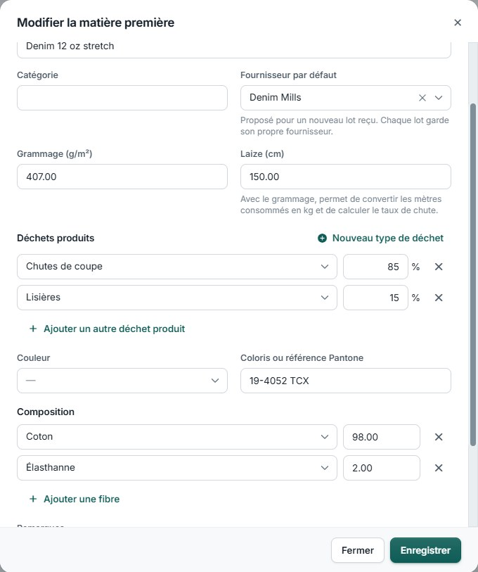
Rien d'indiqué ? Un tissu en mètres donne alors les Chutes de coupe de la société ; une fourniture (bouton, étiquette) ne donne pas de chute estimée.
DivaWaste · Guide 2 — Sans ERP, avec production
C2L'efficience et la chute estimée de l'article
Onglet Articles › JEAN-501 › Modifier : pour chaque tissu, sa consommation par pièce (1,35 m, la consommation brute du placement) et son efficience % (82). Laissée vide : l'efficience par défaut de la société (réglable au-dessus de la liste des articles, 80 % au départ).
Ouvrez l'article : la chute par pièce et le déchet qu'elle donne.
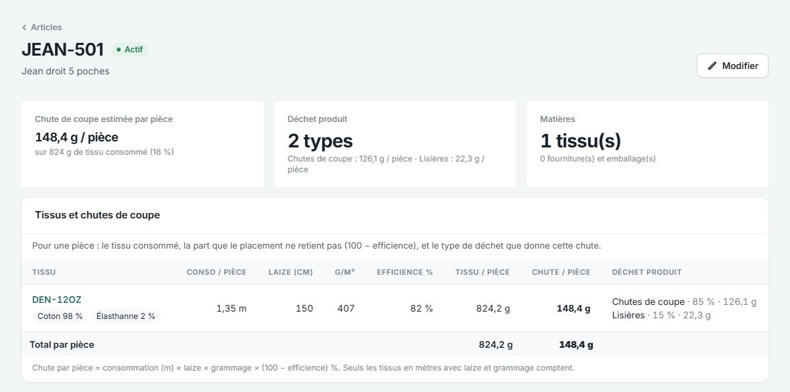
Calcul pour une pièce
Ici
Tissu = 1,35 m × 1,50 m × 407 g/m²
824 g
Chute = 824 g × (100 − 82) %
148 g
Par type : 85 % Chutes de coupe, 15 % Lisières
126 g · 22 g
DivaWaste · Guide 2 — Sans ERP, avec production
C3Les tailles
Référentiel › Matières premières et articles, onglet Tailles. À gauche, vos tailles : tapez-en plusieurs d'un coup (38 40 42 44 46), Ajouter. Glissez une taille pour changer l'ordre.
À droite, les grilles (facultatif) : Nouvelle grille, un nom (Jean homme), cliquez ses tailles.
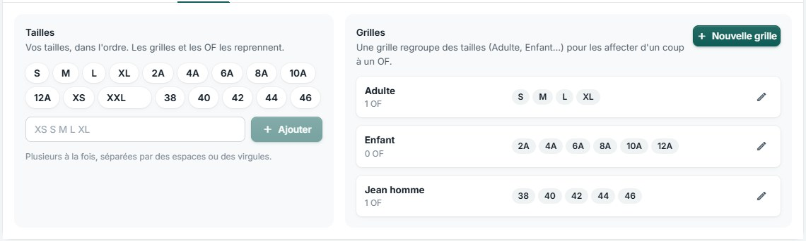
Sur la page de l'OF, sous le chemin : Affecter des tailles. Prenez celles d'une grille, ou Choisir une à une ; tapez les pièces de chaque taille. Le total devient la quantité prévue.
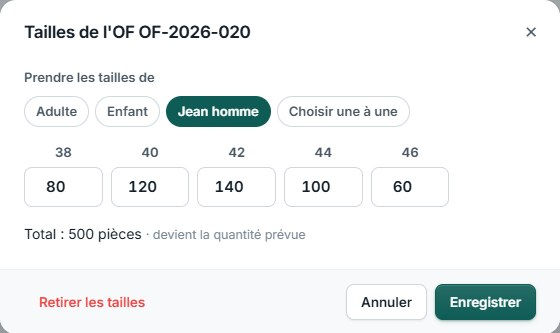
✔ Vous devez voir sur l'OF, sous le chemin : Tailles · Jean homme · 38 80 · 40 120 · 42 140 · 44 100 · 46 60, et 500 pièces prévues.
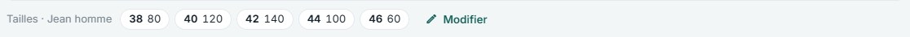
Les tailles informent, elles ne changent pas la chute : la chute dépend du tissu étalé (longueur et couches), pas des tailles coupées dedans.
DivaWaste · Guide 2 — Sans ERP, avec production
C4La coupe : les matelas
Page de l'OF, onglet Coupe. Chaque tissu de l'article a sa carte (laize, grammage, besoin de l'article, déchets produits).
Ajouter un matelas : Longueur (7,24 m, bouts compris), Couches prévues (50), Efficience (proposée : celle de l'article). Ajouter.
Après la coupe, tapez les Couches coupées (48) directement dans la ligne : elle s'enregistre en quittant la case et passe Coupé.
Rouleaux d'une autre laize ? Tapez-la dans la ligne (148) : la case devient orange, ce matelas seulement.
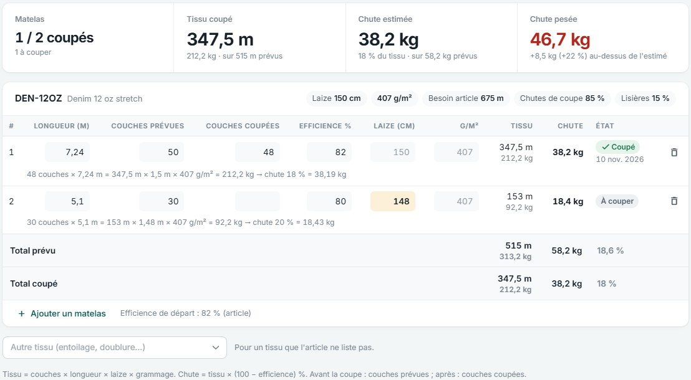
✔ Vous devez voir sous le matelas 1 : 48 couches × 7,24 m = 347,5 m × 1,5 m × 407 g/m² = 212,2 kg → chute 18 % = 38,19 kg.
DivaWaste · Guide 2 — Sans ERP, avec production
C5Estimé contre pesé
Onglet Lots de déchets de l'OF : pour chaque type, la chute estimée (matelas prévus, puis coupés) à côté des lots pesés du même type. Sans matelas, l'estimation vient de l'article (chute par pièce × pièces).
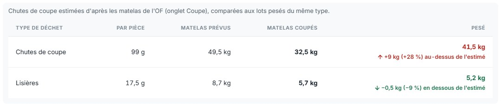
Couleur
Ce que cela veut dire
Rouge ↑
Plus de déchets pesés qu'estimé (Chutes de coupe : 41,5 kg pour 32,5 kg, +28 %) : placement, laize ou efficience à vérifier.
Vert ↓
Moins qu'estimé (Lisières : 5,2 kg pour 5,7 kg). Affiché seulement quand tous les lots du type sont pesés.
« Pas encore pesé »
Un lot existe sans poids : pas de comparaison tant qu'il n'est pas pesé.
Dans Analyse › Statistiques, la colonne « Chute de coupe estimée » reprend les mêmes calculs, par OF, client et article.
DivaWaste · Guide 2 — Sans ERP, avec production
+ Pour aller plus loinFacultatif
+1Importer vos OF depuis un tableau Excel
Vous tenez déjà vos OF, articles ou matières dans Excel ? Accueil › Mise en route › « Importer un fichier Excel ou CSV ». Choisissez ce que contient le fichier (matières, articles, OF, consommations…), puis le fichier : comme pour les lots (Guide 1, partie D), vous vérifiez les colonnes, puis Vérifier sans importer et Importer. Importez dans l'ordre de la liste : d'abord les matières, puis les articles, puis les OF.
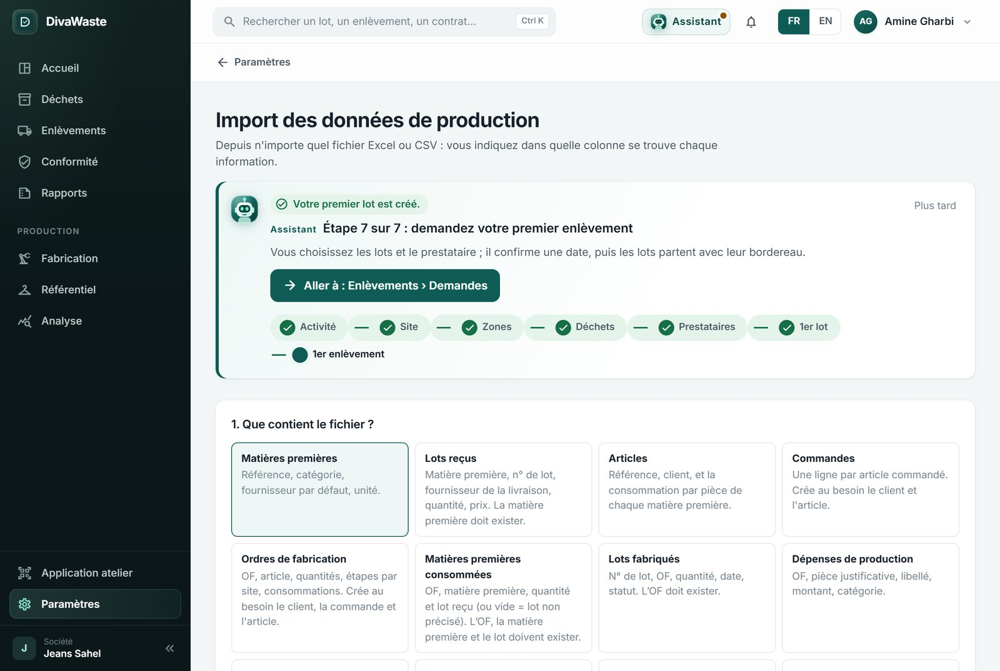
Sans ERP, cette page ne propose ni l'API ni la lecture automatique chaque nuit : ce sont des chemins pour un ERP (Guide 3).
+2Clients, commandes et gain
Référentiel › Clients et fournisseurs › Nouveau client, puis Fabrication › Commandes › Nouvelle commande (client, article, quantité, prix de vente). Rattachez l'OF à la commande (Modifier › Commande). Avec le prix d'achat de la matière, la case Gain de l'OF se calcule.
DivaWaste · Guide 2 — Sans ERP, avec production
Fiche de test
Cochez chaque résultat obtenu, notez ce qui a gêné.
Étape
Résultat attendu
☐
1 Activité
Avant les réponses, pas de menu Production ; après « Production : Oui », Fabrication, Référentiel, Analyse apparaissent.
☐
Mise en route
« Comment vos données arrivent-elles ? » propose seulement « Les saisir » et « Importer un fichier ».
☐
P1 Matière
La fiche s'ouvre après « Enregistrer » ; grammage et laize enregistrés.
☐
P2 Article
« 1,4 m · DEN-12 » (avec une virgule) dans la liste des articles.
☐
P3 OF
L'OF s'ouvre « En cours », avec ses deux étapes.
☐
P4 Déchet
Le lot créé depuis l'OF porte l'OF, l'étape (de la zone) et la matière DEN-12.
☐
P5 Consommé
Prévu 700 m, consommé 720 m, écart +20 m (+2,9 %).
☐
P6 Résultats
8,1 % sur l'OF ; 72,9 g par pièce sur Analyse ; l'OF dans « Origine des déchets » de l'Accueil.
☐
C1 Déchets produits
Deux types sur DEN-12OZ (85 % et 15 %) ; un total différent de 100 % est refusé.
☐
C3–C4 Tailles, coupe
Les tailles de l'OF font 500 pièces ; le matelas 1 donne 38,19 kg de chute estimée.
☐
C5 Estimé / pesé
Chutes de coupe en rouge (+28 %), Lisières en vert (−9 %).
☐
+1 Import
Pas de bloc API ni « Chaque nuit » sur la page d'import.
☐
Assistant
Sur les pages de production, sa carte et son bouton mènent au bon endroit.